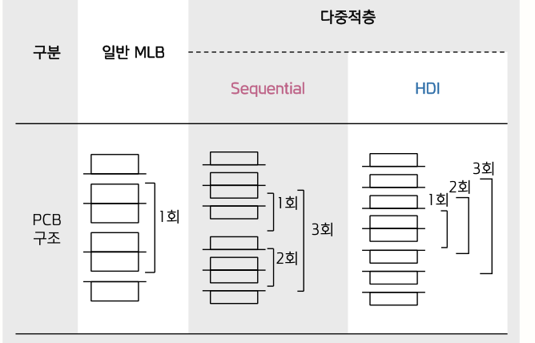
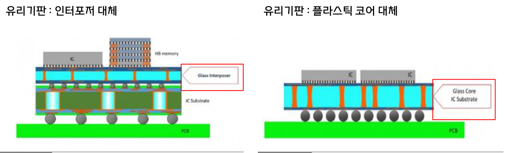

전기전자 PCB와 기판 — 수량이 아니라 «면적·층수»가 캐파를 잡아먹는 사이클, 가격 인상은 FC-BGA에서 BT·CCL로 번지는 중
한눈에 보기
결론
- AI 가속기·서버 CPU 기판이 커지고(대면적) 두꺼워지면서(고다층) 같은 라인의 산출량이 줄어듦 → 증설해도 «유효 캐파»는 덜 늘어남 → ABF 리드타임 최장 56주(정상 12주) (iM, 2026-11-13)
- 부족은 FC-BGA → BT(메모리 기판) → 모듈 PCB(SOCAMM) → CCL·유리섬유포로 내려가는 중. 가격 인상 근거가 «원가 전가»에서 «수급»으로 바뀜 (iM, 2026-10-27)
- 쟁점은 2028년 신규 캐파 유입 이후. «캐파 잠식으로 과잉 없음(DB·대신)» vs «과거 2H22 공급과잉 재현 경계(신한)»
| 지표 | 값 | 비고 | 출처 |
|---|---|---|---|
| ABF 기판 리드타임 | 48~56주 | 균형기 12주 | (iM, 11-13) |
| Nvidia 기판 캐파 목표 | 2.5배 | 향후 3년 | (하나, 10-23) |
| 대만 PCB 업종 월매출 | NT$501억 | 26-10, +57% YoY | (DB, 11-10) |
| 북미 PCB BB Ratio | 1.8 | 26-09, 20년래 최대 | (iM, 11-17) |
| 글로벌 PCB 시장 | 830억$ | 2025, +13% | (키움, 2025-11-25) |
flowchart LR D["AI 가속기·서버 CPU<br/>스위치·메모리"] --> P1["패키지 기판<br/>FC-BGA(ABF)"] D --> P2["패키지 기판<br/>BT(FC-CSP·BGA)"] D --> P3["모듈 PCB<br/>SOCAMM·RDIMM·eSSD"] D --> P4["메인보드<br/>MLB·HDI(UBB·OAM)"] M["소재<br/>CCL·유리섬유포·동박·ABF필름"] --> P1 M --> P2 M --> P3 M --> P4 P1 --> X["대면적·고다층<br/>→ 유효 캐파 잠식"] P4 --> X X --> Y["리드타임↑·LTA·선수금<br/>→ 판가 인상"]
구성: 하나(2026-10-23) FC-BGA→BT 낙수, iM(2026-10-27) 부족의 소재 확산, 교보(2026-08-24) Capa 잠식 3대 원인, 키움(2025-11-25) MLB 공정
원천 한계
전기전자 캐시 166건 중 2025년 발간 6건·2026년 160건 → 실질 기간은 2025-10-27~2026-11-19. 2025년 이전 구간 시계열은 iM 표(2025-01~)와 Prismark 연간 값으로만 확인
- 관련 노트: 00_전기전자_index · 01_전기전자_용어집 · 02_전기전자_수요와전방 · 03_전기전자_MLCC와수동부품 · 05_전기전자_가전과공조 · 06_전기전자_시장규모모델 · 07_전기전자_하우스시각_변경이력 · 08_전기전자_트래킹캘린더
① 기초: 기판 종류와 쓰임새
요약
- 칩을 받치는 «패키지 기판»(FC-BGA·BT)과 부품을 꽂는 «보드»(MLB·HDI·모듈 PCB)는 공정·고객·가격 결정 방식이 다름
- AI 사이클의 병목은 패키지 기판(FC-BGA)에서 시작해 메모리 기판·모듈 PCB·CCL로 확산
품목별 정리
| 품목 | 무엇 | 주 전방 | 핵심 공법 |
|---|---|---|---|
| FC-BGA | ABF 절연재 패키지 기판 | GPU·ASIC·서버 CPU·스위치 | 빌드업·미세배선 |
| BT 기판 | BT 수지 패키지 기판 | 메모리·모바일 AP·RF | FC-CSP·BoC·MCP |
| 모듈 PCB | 메모리 모듈용 보드 | RDIMM·eSSD·SOCAMM | BVH·mSAP |
| MLB | 다층 인쇄회로기판 | AI 서버 UBB·스위치 | 고다층·다중적층 |
| HDI | 고밀도 미세회로 보드 | 스마트폰·AI 통합보드 | 레이저 비아 반복 적층 |
| 유리기판 | 유리 코어·인터포저 | 초대면적 AI 패키지 | TGV(유리 관통 비아) |
자료: 하나(2026-10-23) 패키지 기판 분류표, 한투(2025-11-27) 용어해설, 키움(2025-11-25) MLB 기술, 대신(2026-10-26) 유리기판
- 패키지 기판 vs 보드
- 패키지 기판은 칩과 메인보드를 잇는 «중간층» → 고객(칩 회사)별 맞춤, 전용 라인 생산
- 보드(MLB·모듈 PCB)는 세트·모듈 업체 사양 승인 → 수주 기반이지만 납기가 짧은 편 (iM, 2026-11-17)
- BOM 비중이 작음 → 가격 저항이 약함
- AI 하드웨어에서 기판 원가 비중은 한 자릿수 초반(LSD%) → 고객은 가격보다 «공급 안정성»을 우선 (교보, 2026-08-24)
② 전방 수요: 무엇이 기판을 끌고 가나
요약
- 학습 → 추론 전환이 GPU·ASIC에 더해 서버 CPU·스위치·메모리 기판까지 수요를 넓힘
- 레거시 세트(PC·스마트폰·가전)는 역성장, 성장은 AI·HPC에 집중 → «양극화» (DB, 2026-04-08; 대신, 2026-10-26)
시장 규모
| 항목 | 값 | 기준 | 출처 |
|---|---|---|---|
| 글로벌 PCB | 736억$ → 1,025억$ | 2024→2029, CAGR 7% | (키움, 2025-11-25) |
| 글로벌 PCB | 830억$ | 2025, +13% | (키움, 2025-11-25) |
| 글로벌 PCB 생산액 | 1,052억$ | 2026, +13.9% | (DB, 2026-04-08) |
| MLB | 319억$ | 2025, PCB의 38% | (키움, 2025-11-25) |
| 하이엔드 CCL | CAGR 45% | 2025~2028F | (신한, 2026-05-28) |
| CPO 시장 | CAGR 33.7% | 2025~2031 | (교보, 2026-08-24) |
| 휴머노이드 PCB | 44억$ → 150억$ | 2024→2030 | (iM, 2026-05-26) |
PCB 시장: Prismark(키움 인용)과 TPCA·ITRI(DB 인용)는 집계 기준이 달라 한 선으로 잇지 말 것 ⚠ · 휴머노이드 PCB는 Sierra Circuits 추정
2025년 품목·용도별 성장률 (Prismark)
| 구분 | 성장률 | 출처 |
|---|---|---|
| HDI | +26% | (키움, 2025-11-25) |
| MLB | +14% | (키움, 2025-11-25) |
| MLB 중 18층 이상 | +43% | (키움, 2025-11-25) |
| 패키지 기판 | +13% | (키움, 2025-11-25) |
| AI 서버·스토리지향 | +37% | (키움, 2025-11-25) |
| 유선 네트워크향 | +29% | (키움, 2025-11-25) |
수요 동인
| 동인 | 기판 변화 | 출처 |
|---|---|---|
| 추론·에이전틱 AI | 서버 CPU ‘27 출하 +40%↑ | (iM, 11-13) |
| 서버 CPU 사양 | 80바디·20층 → 100바디·25층+ | (iM, 11-13) |
| SOCAMM(Vera CPU) | 랙당 모듈 288개 | (교보, 08-24) |
| GDDR7(Rubin CPX) | GDDR7 기판 신규 수요 | (한투, 2025-11-27) |
| CPO(광 스위치) | 광엔진 8→16개 → 면적 2.5배+ | (교보, 08-24) |
| TPU·MI 랙스케일 | UBB → HDI 통합보드 | (한투, 2025-11-27) |
- SOCAMM 시장 크기 추정은 하우스마다 단위가 다름
- 한투: 2026년 SOCAMM2 모듈 PCB TAM 약 790억원, GDDR7 기판 TAM 약 1,443억원 (한투, 2025-11-27)
- 교보: Vera Rubin 전망 기준 모듈 140만~200만개 (교보, 2026-08-24)
- iM: Vera CPU 랙 수요까지 넣으면 기존 TAM 추정 상회 가능 (iM, 2026-04-22)
- SOCAMM2 채택 확대
- 2027년 AMD·퀄컴 채택 가능성 → 메모리 3사 고객을 둔 국내 모듈 PCB 3사 수혜 (대신, 2026-11-18)
- 스마트폰은 약함
- 2027년 스마트폰 11.8억대(+2.4%), 폴더블만 3,537만대(+35.5%) (대신, 2026-10-26) → HDI·RF-PCB는 폴더블·로봇 쪽 기회에 기대
업황 지표 — 한국·대만 (월간, YoY)
xychart-beta title "PCB 업황 YoY(%) — 한국 수출·대만 IC기판·대만 CCL" x-axis ["25.01","25.02","25.03","25.04","25.05","25.06","25.07","25.08","25.09","25.10","25.11","25.12","26.01","26.02","26.03","26.04","26.05","26.06","26.07","26.08"] y-axis "YoY %" -20 --> 100 line [-18,-3,4,7,-9,2,1,9,21,15,18,36,33,10,13,6,11,16,12,15] line [3,33,20,27,20,33,19,13,16,24,32,30,43,8,28,26,37,44,54,63] line [11,54,25,14,-1,2,1,-1,10,20,13,29,26,6,25,43,46,66,79,93]
선 순서: ① 한국 PCB 수출(전국) ② 대만 IC기판 판매 ③ 대만 CCL 판매. 자료: iM PCB Tracker #2 표1(KITA·MOEA, 2026-10-27). 9월 한국 수출 +20%
xychart-beta title "북미 PCB BB Ratio" x-axis ["25.01","25.02","25.03","25.04","25.05","25.06","25.07","25.08","25.09","25.10","25.11","25.12","26.01","26.02","26.03","26.04","26.05","26.06","26.07","26.08","26.09"] y-axis "배" 0.8 --> 2.0 line [1.2,1.3,1.2,1.2,1.0,1.1,1.0,1.0,0.9,1.0,1.1,1.2,1.1,1.1,1.1,1.2,1.6,1.5,1.4,1.3,1.8]
자료: iM 표1(GEA, 2026-10-27) 25.01~26.08, 26.09 값 1.8은 iM(2026-11-17) 본문
- 대만 CCL 판매 증가율이 IC기판보다 가팔라짐(8월 +93%) → 병목이 소재 단으로 이동한 신호
- 한국 수출은 물량 −4%, ASP +25%(9월) → 단가가 성장을 끔 (iM, 2026-10-27)
- 일본 패키지기판 생산 8월 +52%(ASP +48%, 물량 +2%) (iM, 2026-10-27) — 표1의 일본 IC기판 생산(+30%)과 기준이 다름 ⚠
업황 지표 — 대만 PCB 업종 월매출
xychart-beta title "대만 PCB 업종·Unimicron 월매출 (NT$ 십억)" x-axis ["25.05","25.06","25.07","25.08","25.09","25.10","25.11","25.12","26.01","26.02","26.03","26.04","26.05","26.06","26.07","26.08","26.09","26.10"] y-axis "NT$ 십억" 0 --> 55 line [28.9,28.6,30.6,31.3,32.9,31.9,31.7,33.0,35.6,29.1,35.6,37.0,38.1,38.7,43.0,45.1,48.7,50.1] line [10.6,10.9,11.3,11.4,11.3,11.3,11.5,11.8,12.8,11.6,13.1,13.9,14.1,14.9,16.3,17.7,18.7,19.0]
선 순서: ① PCB 업종 합산(Unimicron·Nanya PCB·Kinsus·Compeq·Tripod) ② Unimicron. 자료: DB 대만 Tech 매출(2026-06-11: 25.05~26.05, 2026-11-10: 26.06~26.10). 11월 호 표는 2025년 열이 한 칸 밀려 있어 6월 호 값 사용 ⚠
- 10월 YoY: 업종 +57%, Unimicron +68%, Nanya PCB +70%, Tripod +70% (DB, 2026-11-10)
- 2월 저점(춘절) 이후 8개월 연속 상승 → 연말 성수기 진입 (DB, 2026-11-10)
③ 기술 심화
요약
- 핵심 원리 하나: «기판 한 장이 커지고 층이 늘면 → 패널당 취수↓·공정 반복↑·수율↓» → 명목 캐파가 늘어도 산출은 덜 늚
- 신기술(유리기판·CPO·다중적층 MLB·BVH 모듈)은 모두 이 잠식을 키우는 쪽
FC-BGA 대면적·고다층화
| 항목 | 변화 | 출처 |
|---|---|---|
| 서버용 vs 일반 FC-BGA | 면적 4배+, 층수 2배+ | (교보, 08-24) |
| 하이엔드 서버 CPU 기판 | 면적 +56%, 층 +25% | (iM, 11-13) |
| 생산 부담 | 산술적으로 약 2배 | (iM, 11-13) |
| GPU 패키지 | 4,000W+ 예상(Rubin Ultra) | (하나, 10-23) |
| 최대 바디 크기 | 150×150mm 초과 로드맵 | (하나, 10-23) |
| 2028 동일 라인 아웃풋 | 2025 대비 약 40% | (DB, 06-02) |
DB 40%는 Ibiden 공정 부하 자료로 재계산한 값. 하나 표는 Unimicron 기술 로드맵 인용
- 패키지가 커지는 3대 원인 (교보, 2026-08-24)
- 다이 수 증가(노광 한계 → 칩렛) → 다이 간 배선 급증
- HBM 스택 증가 → 가장자리 팬아웃 영역 확대 → 층수 동반 증가
- 전력 부품 내장·CPO → 실장 면적·전원층·저손실 소재 요구
- 휨(Warpage)
- 층수↑·배선 미세화 → 휨 → 수율 확보 부담 (대신, 2026-10-26)
- 미세화 정체 → 층·면적으로 해결
- 칩 배선 피치는 계속 줄지만 기판 배선 미세화는 물리적 한계 → 층수·면적 확대로 I/O 대응 (교보, 2026-08-24)
MLB: 다중적층·HDI

출처: 키움증권(이수페타시스 자료), 2025-11-25, p.17
| 공법 | 구조 | 층수·두께 | 출처 |
|---|---|---|---|
| VIPPO | 비아를 도금으로 메워 평탄화 | 22~30층, 3.2T | (키움, 2025-11-25) |
| 다중적층(Sequential) | 신호층·전력층 분리 후 재적층 | 40층+, 5T+ | (키움, 2025-11-25) |
| HDI on MLB | 고다층 위 미세회로 | ⚠ 원문 없음 | (키움, 2025-11-25) |
- 적층–드릴–도금–메꿈을 반복 → 같은 설비에서 Capa 손실 → MLB 구조적 부족 (키움, 2025-11-25)
- TPU 7세대 UBB는 20층 중후반, 8세대부터 랙스케일 통합보드 → HDI 기술 필요 (한투, 2025-11-27)
- MLB 내 다중적층 매출 비중 2025년 9% → 2026년 31% 전망(국내 대표 MLB 업체 사례) (신한, 2026-05-28)
메모리 모듈 PCB: BVH·SOCAMM
- BVH(Blind Via Hole)
- 고속 RDIMM·eSSD에 쓰는 고부가 공법, 공정 수가 많음 → 공시 가동률 71%여도 실질 90%+ (한투, 2025-10-27)
- BVH 적용 매출 비중 7.7%(1Q24) → 31.8%(2Q25), 국내 모듈 PCB 1사 사례 (한투, 2025-10-27)
- SOCAMM
- LPDDR5X 패키지 4개를 탈착식 모듈로 묶은 서버 메모리 폼팩터, Vera CPU부터 적용 (한투, 2025-11-27)
- 기존 서버용 DDR5 모듈 PCB 대비 ASP 50% 이상↑ (키움, 2025-11-25) / 1.5~2배+ (신한, 2026-05-28)
- eSSD 모듈
- Client SSD 10층 vs eSSD 12층·Low CTE, E3.S 14층+ (S.T.A.R 리서치, 2026-09-15)
유리기판

출처: 대신증권(LPKF 자료), 2026-10-26, p.9
| 구분 | 인터포저 대체 | 코어 대체 |
|---|---|---|
| 위치 | 칩↔기판 중간층 | 패키지 하단 기판 |
| 대체 대상 | 실리콘·유기 인터포저 | ABF 유기 코어 |
| 핵심 기술 | TGV·고밀도 팬아웃 | 대형 유리 가공·패터닝 |
자료: 대신(2026-10-26)
- 왜 필요한가
- 유기 코어는 대면적에서 휨·신호손실 한계 → 유리는 유전율·유전손실이 낮아 고속 신호 감쇄·발열이 적음 (대신, 2026-10-26)
- 100×100mm 넘는 패키지에서 휨 없이 다수 칩 집적 가능 (대신, 2026-10-26)
- 누가·언제
| 업체 | 단계 | 목표 시점 | 출처 |
|---|---|---|---|
| 삼성전기 | 세종 파일럿·소재사 제휴 | 4Q27~1H28 양산 | (대신, 10-26) |
| SKC(앱솔릭스) | 미국 조지아 전용 공장 완공 | 신뢰성 검증 중 | (대신, 10-26) |
| LG이노텍 | R&D | ⚠ 원문 없음 | (대신, 10-26) |
- 모르는 것: 고객 확정·단가·수율 ⚠ — 하우스 간 상용화 시점도 갈림(⑥)
CPO와 기판
- CPO = 스위치 칩 옆 같은 패키지에 광엔진을 통합 → 광엔진 실장 면적·신규 층·발열 관리가 기판에 필요 → 대면적 ABF 기판 순증 (교보, 2026-08-24)
- 일부 플러거블 트랜시버용 HDI·RF PCB는 대체됨 (교보, 2026-08-24)
④ 캐파·증설
요약
- 2026년 상반기부터 «고객 선수금 + 장기공급계약(LTA)» 기반 증설이 해외 → 국내로 확산
- 신규 FC-BGA 캐파 대부분은 2028년 유입 → 2027년 부족이 오히려 심해짐 (iM, 2026-10-27)
증설 로드맵
| 품목 | 라인 | 2026 | 2027 | 2028 | 2029 | ||||||||||||
|---|---|---|---|---|---|---|---|---|---|---|---|---|---|---|---|---|---|
| Q1 | Q2 | Q3 | Q4 | Q1 | Q2 | Q3 | Q4 | Q1 | Q2 | Q3 | Q4 | Q1 | Q2 | Q3 | Q4 | ||
| FC-BGA | 삼성전기 기존(부산·세종·베트남) | '27 보완투자 캐파 +20~30% | |||||||||||||||
| FC-BGA | 삼성전기 국내 신규(Nvidia) | 건설·설비 반입(~'28.05) | 양산 개시 | ||||||||||||||
| FC-BGA | 삼성전기 베트남 신규(ASIC) | 건설·반입(취득 '28.04) | 양산 개시 | ||||||||||||||
| FC-BGA | Unimicron 광푸 2공장(Nvidia) | 반입 | 1단계 | 2단계 | 풀캐파 | ||||||||||||
| FC-BGA | Unimicron 양메이 2·3공장 | 2공장 건설(2H27 완공) | 2공장 양산 | 3공장 완공('29) | |||||||||||||
| FC-BGA | Ibiden 가마 Cell6·오노 2단계 | 설비 반입 | 양산(오노=기존 3배) | ||||||||||||||
| FC-BGA | Ibiden CPU향 추가(1,510억엔) | 투자 결정('26.10)·집행 | FY2029 양산 | ||||||||||||||
| FC-BGA | Kinsus 양메이 6공장 | '27 월 캐파 +25% | |||||||||||||||
| MLB | 이수페타시스 | 6K→8K | 10.5K | 12.5K+α | |||||||||||||
| 모듈 PCB | 코리아써키트 | 모듈 캐파 +45% | |||||||||||||||
| 유리기판 | 삼성전기 세종 파일럿 | 파일럿·검증 | 양산 목표 | ||||||||||||||
| 소재 | 박형 유리섬유포 | 품귀·추가 인상 | 점진 완화 | ||||||||||||||
범례: 진한 보라 = 건설·반입·집행, 연보라 = 양산·이정표, 점선 = 계획. 자료: iM(2026-10-27) 표2, iM(2026-10-30) Ibiden, iM(2026-04-22) Kinsus, 신한(2026-05-28) MLB(단위 원문 «㎢/월» 표기 ⚠), 대신(2026-11-18) 모듈, 대신(2026-10-26) 유리기판, iM(2026-10-27) 유리섬유포
투자 규모
| 주체 | 규모 | 내용 | 출처 |
|---|---|---|---|
| 패키지기판 업체 합산 | 37억$ → 66억$ | 2026 CapEx 컨센서스 | (iM, 07-03) |
| Ibiden | 5,000억엔 | FY26~28, ASIC 2,200·GPU 2,800 | (신한, 05-28) |
| Ibiden(추가) | 1,510억엔 | CPU용, FY2029 양산 | (iM, 10-30) |
| Unimicron | NT$340억 | 2026 CapEx(254억에서 상향) | (신한, 05-28) |
| 삼성전기 | 8조원 | 세종 패키지기판(기간 미정) | (iM, 07-03) |
| 대덕전자 | 1.4조원 | 1·2차 합계, BT 포함 | (SK, 11-02) |
가동률 (3Q26)
| 라인 | 가동률 | 출처 |
|---|---|---|
| 국내 BT·FC-BGA 1사(면적) | 95% | (iM, 11-17) |
| 국내 대형 패키지기판(면적) | 91% | (iM, 11-17) |
| 국내 메모리 기판 1사 | 80%대 | (iM, 11-17) |
| 모듈 PCB 2사(공시) | 61~73% | (iM, 11-17) |
| 국내 FC-BGA 1사 | 80% 중반 | (SK, 11-02) |
사례: 대덕전자 95%, 삼성전기 패키지 91%, 심텍 80%대, 티엘비 73%·코리아써키트 61%. 모듈 PCB는 적층 부하가 큰 제품 비중 확대 → 실질 가동률은 공시보다 높음
- 선수금이 증설 재원
- Ibiden 선수금 1,997억엔(연초 대비 약 2.5배) (iM, 2026-10-30)
- 국내 대형사 유동 선수금 2,246억 → 5,041억원, LTA 관련 선수금 $5.4억 → $7.8억 (iM, 2026-11-17)
- 선두 업체는 2028~2032년 캐파 할당을 마침 (iM, 2026-11-13)
- BT 캐파는 오히려 줄어듦
- 선두 ABF 업체가 BT 투자 중단·공용 설비를 FC-BGA로 재배치 → BT 공급 여력 제한 (iM, 2026-07-03; 하나, 2026-10-23)
- Goldman: BT 수급 갭 2026년 1% → 2027년 11% → 2028년 14%, 메모리 기판 수요 연평균 +41% vs 캐파 +6% (iM, 2026-10-27 인용)
- 신공장 리드타임: 착공~출하 2.5~3년 → 차세대 증설분은 2029년 가동 (iM, 2026-10-27 인용)
⑤ 가격·수급
요약
- 2026년 3월 메모리 기판 +10% 인상이 출발점 → FC-BGA·BT·CCL·유리섬유포로 인상이 연쇄
- 2027년 4분기까지 고급 ABF·BT 분기 10~15% 인상 전망(대만 언론 인용) — 국내 하우스 추정 아님 ⚠
가격 인상 연대표
| 시점 | 품목 | 인상 폭 | 출처 |
|---|---|---|---|
| 2026-03 | 메모리 기판(IDM 용인) | 평균 +10% | (iM, 04-22) |
| 2026-03~04 | FC-BGA 일부 고객 | +10% | (iM, 04-22) |
| ~2026-05 | 하이엔드 FC-BGA용 CCL | +30% | (신한, 05-28) |
| 3Q26 | BT / ABF(대만 1사) | +10~20% / +20~30% | (iM, 10-27) |
| 4Q26 | BT / ABF | 한 자릿수 / +10~20% | (iM, 10-27) |
| 1Q27 | BT | +20% 이상 | (iM, 10-27) |
| 3Q26~4Q27 | ABF | 분기 +10~15% | (iM, 10-27) |
| 2027-01 | 일반 다층판용 CCL(일본 1사) | +200% | (iM, 10-27) |
3Q26 이후 행은 iM이 대만 언론에 실린 Daiwa·미국계·일본계 증권사·TrendForce 전망을 정리한 표3·표4 인용
단가 실적
| 지표 | 값 | 출처 |
|---|---|---|
| 한국 PCB 수출 ASP(9월) | +25% YoY | (iM, 10-27) |
| 메모리 모듈 기판 ASP | 105만 → 146만원/㎡ | (신한, 05-28) |
| 국내 기판 4사 3Q26 납품단가 | +26~61% YoY | (iM, 11-17) |
| 박형 유리섬유포(1080) | 저점 대비 약 +300% | (iM, 10-27) |
| CCL 가격 전망 | 3Q +30%, 4Q +20% | (iM, 10-27) |
메모리 모듈 기판 ASP: 4Q23 → 1Q26. 4사 납품단가: 대덕전자 +61%, 심텍·티엘비 +41%, 코리아써키트 +26%
- 이익 민감도: PCB 원가율 80~90% → 판가 +10%면 수익성 약 +8%p (iM, 2026-04-22)
- 3Q26까지는 믹스, 4Q26~1Q27부터 판가 (iM, 2026-11-17)
- 3Q까지 단가 상승은 SOCAMM·플립칩 등 고부가 믹스 효과
- 메모리 기판의 같은 제품 판가 인상(app-to-app)은 4Q26~1Q27 본격 반영
- 수요 둔화와 공급 부족이 공존
- 대만 전자광학 PMI 10월 60(3월 이후 최저), 신규주문 둔화 vs 납기·가격 지수 70·80 고점권 (iM, 2026-11-13)
- 대만 IC기판 재고액 +208%(3MMA) vs 판매 +54% → 고사양 제품 선제 빌드업, 재고단가가 판매단가를 12% 웃돎 (iM, 2026-10-27)
- 소재가 최대 변수
- 일부 업체는 2027년 1분기 말부터 필요한 원자재 100% 조달을 확신 못 함(CCL·유리섬유·동박) (SK, 2026-11-02)
- Low CTE 유리섬유 2026~2028년 수요 > 공급(Prismark) (메리츠, 2026-10-29)
⑥ 하우스별 시각과 변화
요약
- 공통 시각(iM·하나·DB·교보·대신·신한): 2027년까지 FC-BGA·BT 부족 심화, 판가 인상 지속
- 갈리는 곳: 신규 캐파 램프 시점, 2028년 이후 과잉 여부, 유리기판 상용화 시점, 소재 부족 해소 시점
엇갈림
| 질문 | 하우스(발간) | 입장 |
|---|---|---|
| 국내 신규 FC-BGA 램프 | 하나(10-23) | 2027 하반기 램프업 |
| 〃 | iM(10-27) | ‘28.05 반입 완료 → 3Q28 양산 |
| 증설 후 과잉 재현? | 신한(2025-11-20) | 2019~21 부족 → 2H22 과잉 전례 |
| 〃 | 대신(04-08) | 2027년까지 과잉 가능성 낮음 |
| 〃 | DB(06-02) | 2028 공급 2배+여도 잠식 → 과잉 아님 |
| 유리기판 상용화 | 한투(2025-11-27) | 2026년 가시화 |
| 〃 | 대신(10-26) | 4Q27~1H28 양산 목표 |
| 소재(CCL) 부족 해소 | 키움(2025-11-25) | 기판사 실적발표 «‘26 하반기 균형» 인용 |
| 〃 | iM(10-27) | ‘27 소재 약 20% 부족, ‘27 하반기~‘28 완화 |
바뀐 것
| 항목 | 이전 | 이후 |
|---|---|---|
| AI 기판 판가 | 경쟁사 증설 → 하락 리스크 (키움, 2025-11-25) | 예상보다 상승 (iM, 10-30) |
| 메모리 기판 판가 | 인하설 → «요구 없음» (iM, 07-03) | 1Q27 +20% 추가 인상 논의 (iM, 10-27) |
| FC-BGA 가동률 | 70% 내외, 2H26 풀캐파 (한투, 2025-11-27) | 3Q26 풀가동, 예상보다 이름 (대신, 10-26) |
| 신규 증설 시점 | 대만·일본 먼저 (iM, 04-22) | 국내 선수금 증설 확산 (iM, 10-27) |
| 국내 기판주 PER | 국내 16배 vs 해외 33배 (iM, 10-27) | ‘28 국내 9.1배 vs 11.0배 (iM, 11-17) |
키움 행은 Ibiden 실적 발표 요약 인용(키움 자체 전망 아님). iM 11-17은 하이투자증권 파일명으로 수집된 iM 리포트(고의영)
- 판정: 2027년 부족 심화 = iM·하나·DB·교보·대신·신한(6곳, «공통 시각») / 2028년 이후 과잉 경계 = 신한의 과거 사이클 언급이 유일 → 아직 소수 의견
- 주가 측면 경계: «역금융장세·데이터센터 지연 우려로 멀티플 축소» (iM, 2026-11-17), «AI 투자 지속 비용 우려가 지배» (교보, 2026-11-04) — 펀더멘털 아닌 할인율 변수
⑦ 트래킹 포인트
| 시점 | 확인할 것 | 좋은 신호 | 나쁜 신호 |
|---|---|---|---|
| 매월 10일 | 대만 PCB 업종 월매출 | YoY +50% 유지 | +30% 하회 |
| 매월 | 한국 PCB 수출 ASP | +20% 이상 | 마이너스 전환 |
| 매월 | 북미 PCB BB Ratio | 1.2 이상 | 1.0 하회 |
| 매월 | 대만 전자광학 PMI 납기 | 70 부근 유지 | 50대 급락 |
| 분기 | ABF 리드타임 | 50주+ 유지 | 20주대 축소 |
| 1Q27 | BT 판가 협상 | +20% 반영 | 동결·인하 |
| 2H27 | Unimicron 신규 풀캐파 | 판가 유지 | 판가 정체 |
| 3Q28 | 국내 신규 FC-BGA 양산 | 순조 램프 | 지연·수율 |
기준선: DB(2026-11-10) +57%, iM(2026-10-27) ASP +25%·납기 지수, iM(2026-11-13) 리드타임·PMI, iM(2026-11-17) BB 1.8
출처 (펼쳐 보기)
- 업황 데이터: iM증권 PCB Tracker #2(2026-10-27) 표1~4 · iM «MLCC와 PCB, 센티먼트와 펀더멘털»(2026-11-13) · iM(하이투자증권 파일명) «PCB 산업, 견조한 BB Ratio»(2026-11-17) · DB증권 대만 Tech 매출(2026-06-11·2026-11-10) - 산업 전망: 키움증권 기판·MLCC·폴더블(2025-11-25) · 한국투자증권 2026년 연간전망(2025-11-27), AI PCB 체리피킹(2025-10-27) · 신한투자증권 2026년 산업 전망(2025-11-20), 2026년 하반기 전망(2026-05-28) · DB증권 전례 없는 단가 인상(2026-04-08), 없어서 못 판다(2026-06-02) · iM증권 패키지기판과 MLCC 2027/2030(2026-04-22), 2026 하반기 전망(2026-05-26), 메모리기판 판가 이슈코멘트(2026-07-03), Ibiden 실적 시사점(2026-10-30) · 교보증권 기판 브랜드 뉴 데이(2026-08-24), 전기전자 Weekly(2026-11-04) · 하나증권 높아지는 패키지 기판의 위상(2026-10-23) · 대신증권 2027년 산업전망(2026-10-26), 폴더블폰 AI 수혜(2026-04-08), PCB 소캠2(2026-11-18) - 사례(기업 리포트에서 산업 사실만): SK증권 대덕전자(2026-11-02) · 메리츠증권 삼성전기(2026-10-29) · S.T.A.R Research 심텍(2026-09-15, 외부 리서치팀 리포트)
다음 갱신 때 확인할 것
- 삼성전기 국내 신규 FC-BGA 라인 양산 시점(2H27 vs 3Q28) 확정 ⚠
- iM PCB Tracker #1·#3 확보 → 표1 시계열 2026-09 이후 연장, 일본 IC기판 생산 +30% vs +52% 기준 차이 확인 ⚠
- 이수페타시스 MLB 캐파 단위(원문 ㎢/월 표기) 확인 ⚠
- 유리기판 고객·단가·양산 시점 하우스 추가 확보 ⚠
- Prismark 2026년 PCB·패키지기판 시장 갱신치(현재 2025년 값까지)
- 2027년 1분기 BT 판가 협상 결과, CCL·유리섬유포 2027년 계약 가격
한 줄: 이번 기판 사이클의 본체는 «물량»이 아니라 «면적·층수가 먹어 치우는 캐파» — 2028년 신규 라인이 들어오기 전까지는 공급자가 가격을 정하는 구간